Decisions carried in: the session sidebar from V1 on the left; channel strips from V2 under each picture, each collapsible to one line; no inspector (deeper settings in each strip's ⋯ popover); Program as tally on the feed pictures (red on air, green next) with an optional Program view; C's status bar; and the hybrid dropdown (live preview + compact native rows). Proposals the app doesn't have yet are marked NEW. Earlier rounds: 1 · 2.
Two-camera Program meeting, both backing up. Session sidebar, tally on the feed pictures (no separate Program picture), channel strips with each feed's own recording and output, scopes, status bar.
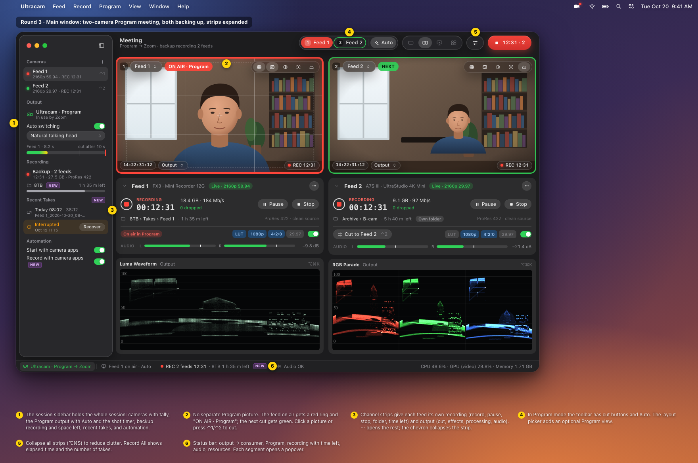
Same meeting with every strip collapsed to one line (⌥⌘S). The freed space goes to scopes and the director timeline. Feed 2's ⋯ popover holds the deeper settings that used to need an inspector.
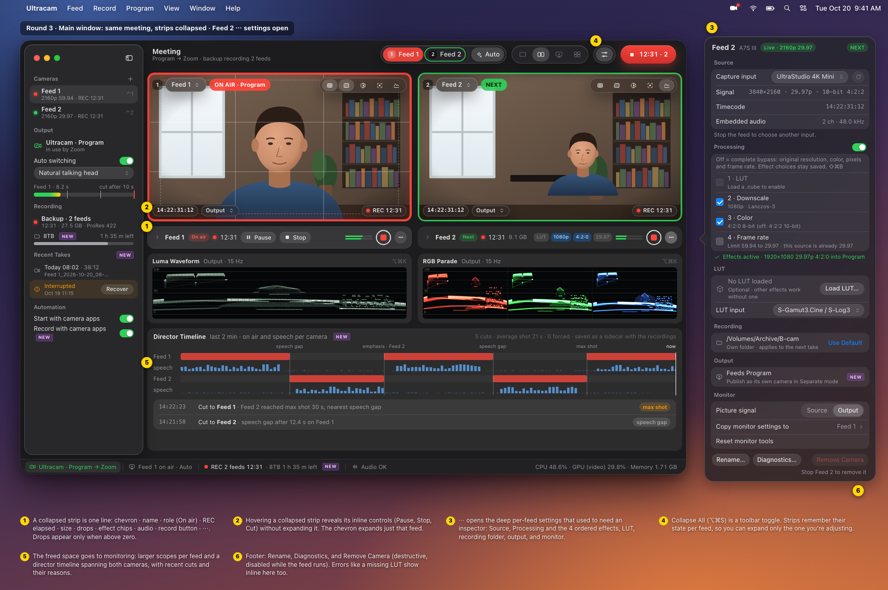
For when you want to watch exactly what Zoom gets: Program large, sources with tally, cut bar with shot timer, director timeline. Side by Side with tally stays the default.
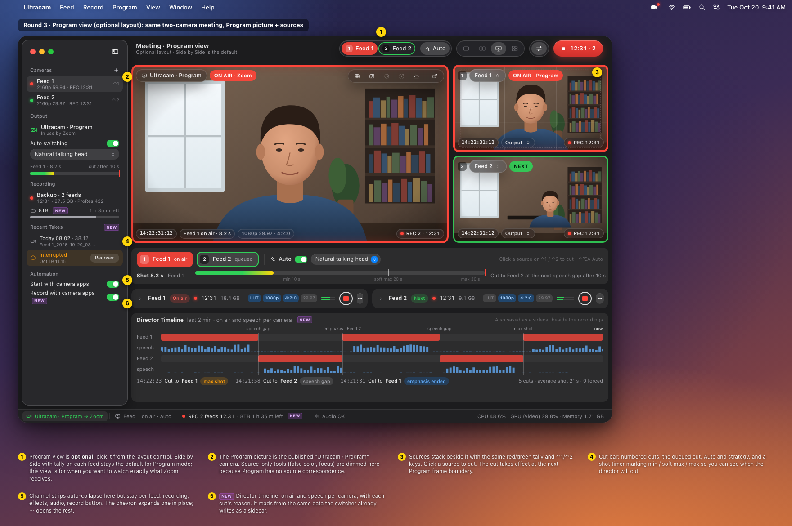
Single layout with an expanded strip, signal path (source → effects → Zoom), scopes in the right column, and the dropdown open.
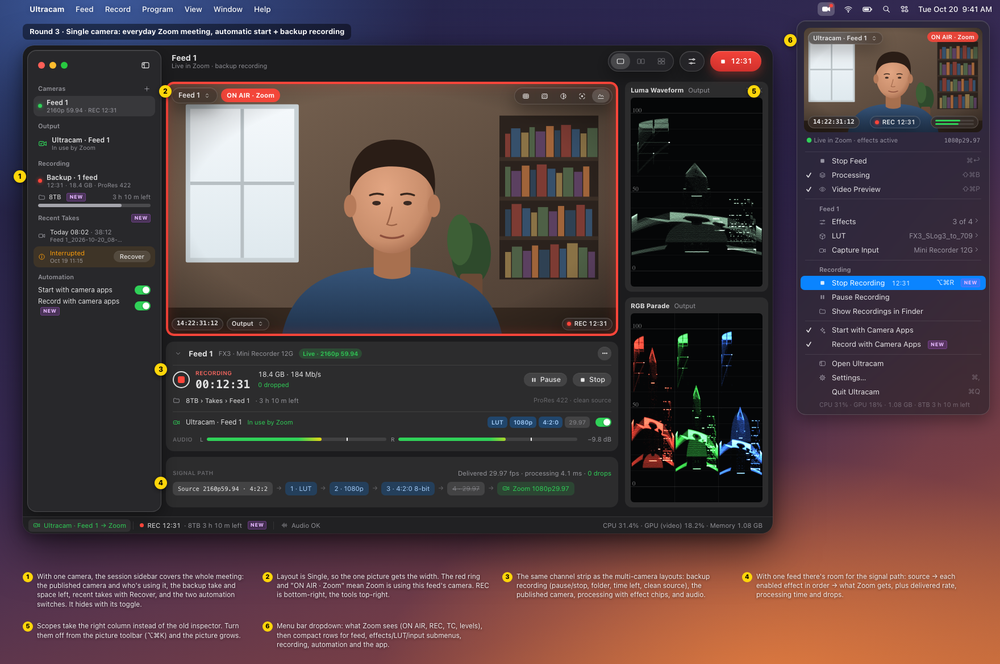
No meeting. Each feed records on its own (Feed 2 paused), with its own folder and time left, its own virtual camera (not in use), monitor tools and scope.
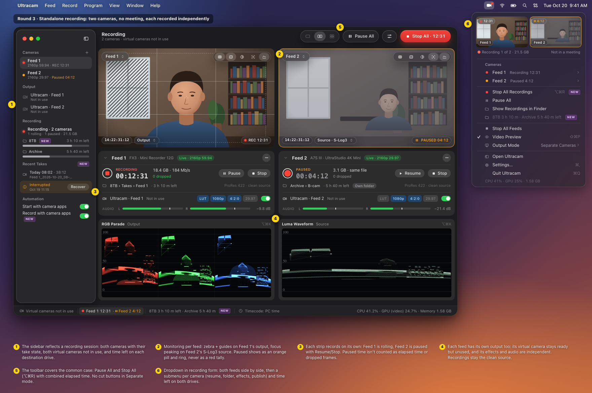
Sidebar hidden, strips auto-collapse, one feed on air in Zoom, a No signal feed, a paused feed, and a hover toolbar.
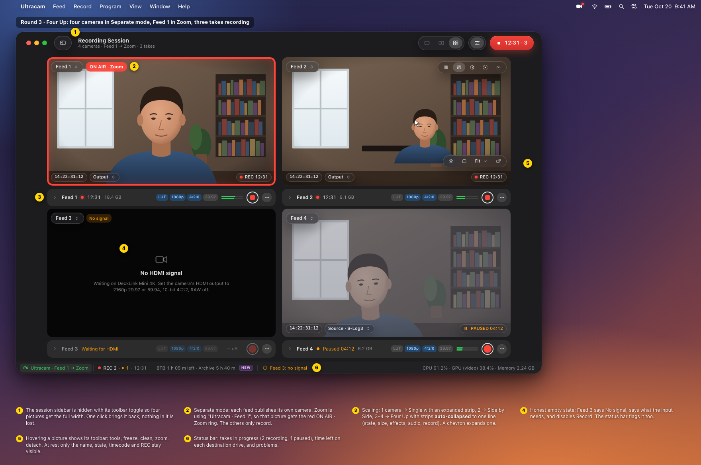
Overlay anatomy, all five tool popovers (matching the current code: false color is Off / Sony S-Log3 / EL Zone), view-only states, context menu, detached window, scope spec.
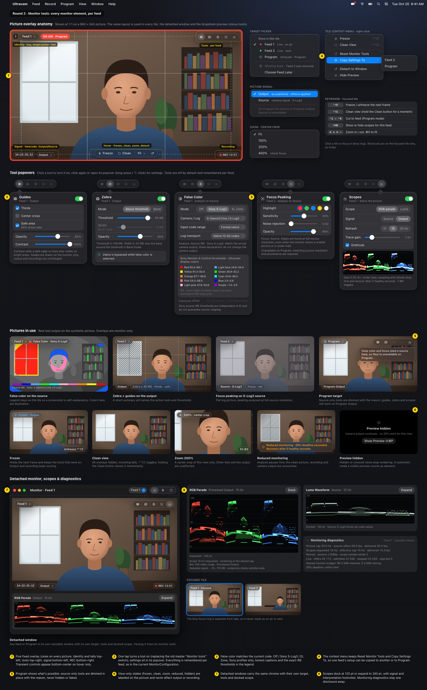
One shape for every state: Program meeting with cut thumbnails and submenu, single meeting, two-feed recording, automatic waiting, failed start, stopped, needs attention. Plus icon states and implementation notes.
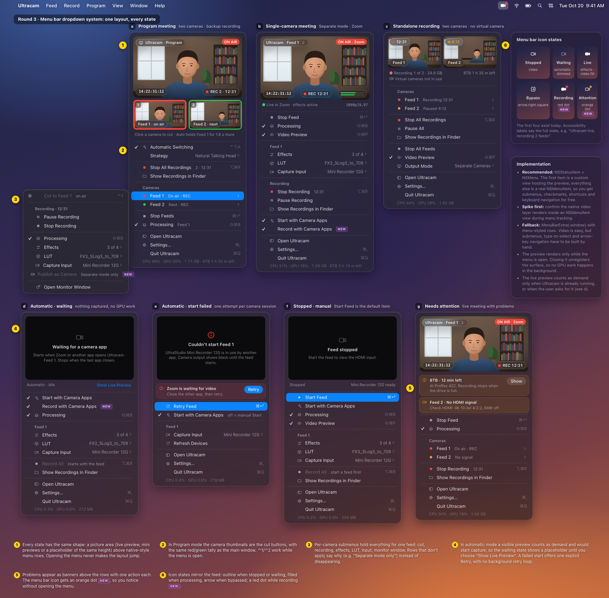
Every command in its native menu, plus a shortcut table with conflict checks.
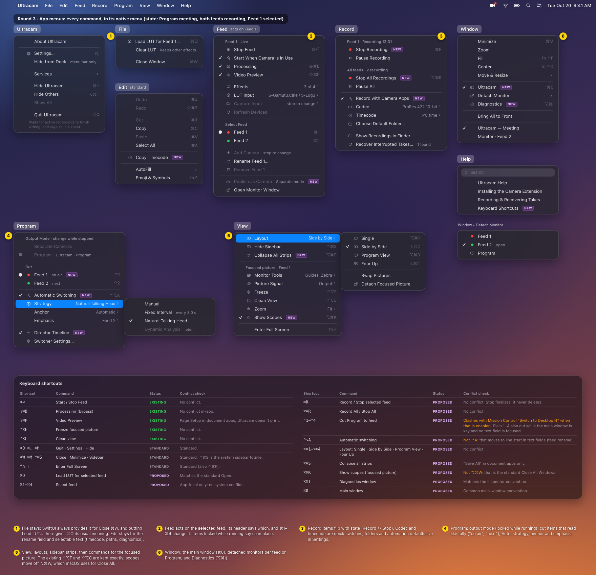
The engineering detail moved out of the everyday window: per-feed capture, drops by stage, audio, encoder and monitoring, the App resources tab, and the four status bar popovers.
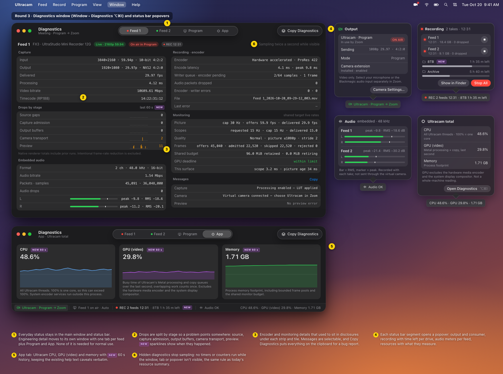
General, Recording, Camera, Switcher (every director tunable with its real default), Monitor defaults, Advanced.
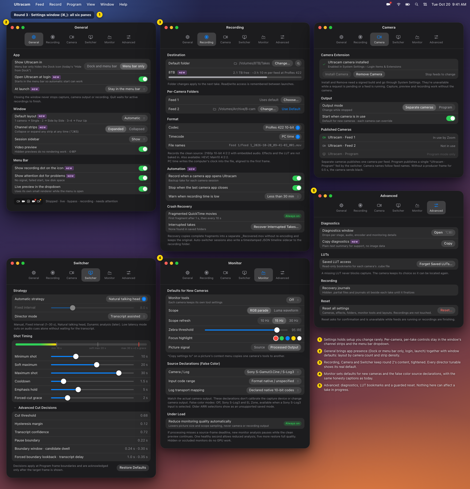
12 strip states expanded and collapsed, picture/Program states, sidebar, status bar, first launch, dropdown, icon states, layout scaling, quit sheet, LUT error.
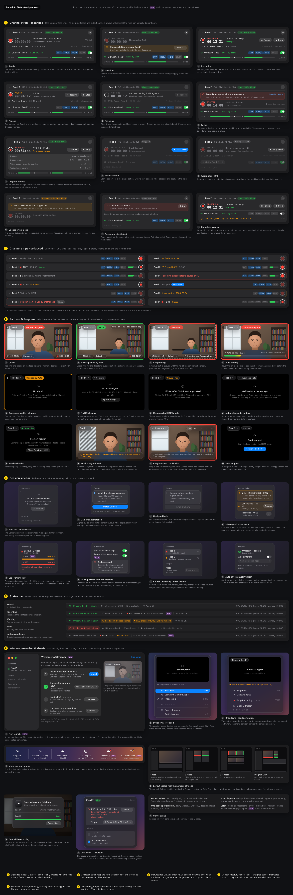
Measurements, system color semantics, type scale, component → native API table (and which current Swift views each replaces), state matrices, shortcuts, accessibility, a light appearance sample, performance rules.
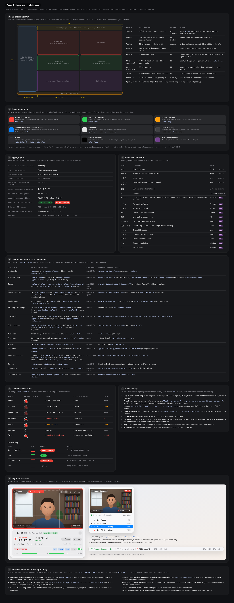